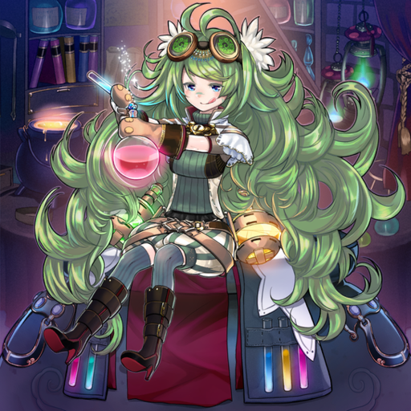
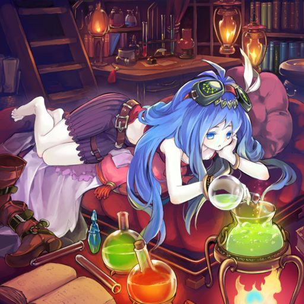
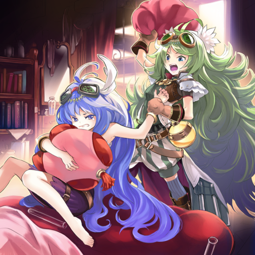
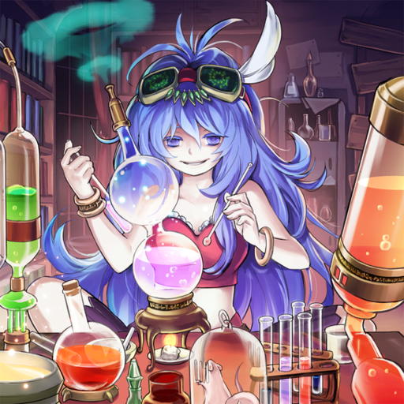

There used to be a time when we competed with each other to make new potions... Her mixing sense far surpasses mine, but because of her introverted personality, she just slacks around in her house all day now. My business is as good as ever, but it just feels like something's missing when she's like that... What can I do to bring back to her old energetic self...
"Alchemic Magician" A spellcaster who cheerfully brews potions in her shop. She's worried about her school-days-rival and best friend, "Slacker Magician".

"Slacker Magician" The best friend of "Alchemic Magician". Her eccentric ideas and thoughts led to the creation of many new types of potions. Because of her introverted personality, she is currently avoiding people and researching at home.

I gotta get her outside and fix up that personality of hers... But no matter how many times I invite her, she won't come outside – looks like I'll have to do it by force!!
"Alchemic" barged into the home of "Slacker". Seems like "Slacker" finally felt her best friend's worry, as she began accepting individual orders for potions.

She's changed alright, but it seems like she's gotten even gloomier than before... But her instant-energy potions got really popular, even though the side effect is huge. I wanna say I expected nothing less, but that potion seems really addictive even after only one drink. Is this really alright...?

As soon as you drink this magical potion, you can feel your body changing right away, so it's very popular with warriors and laborers